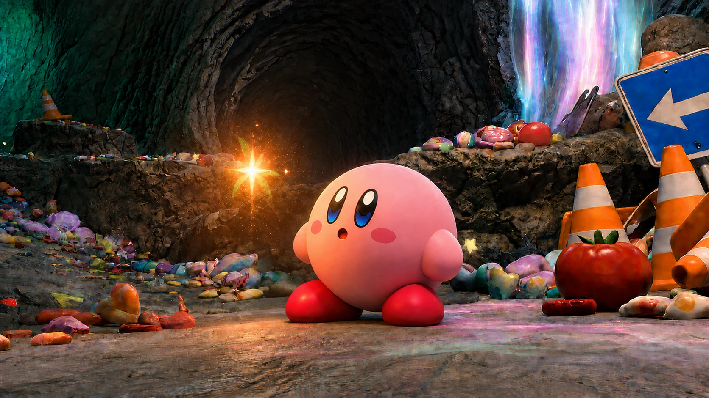
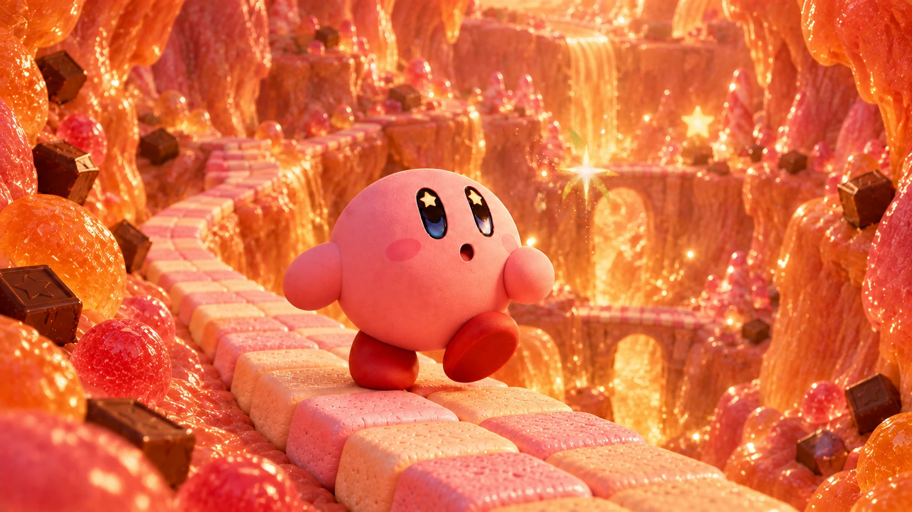
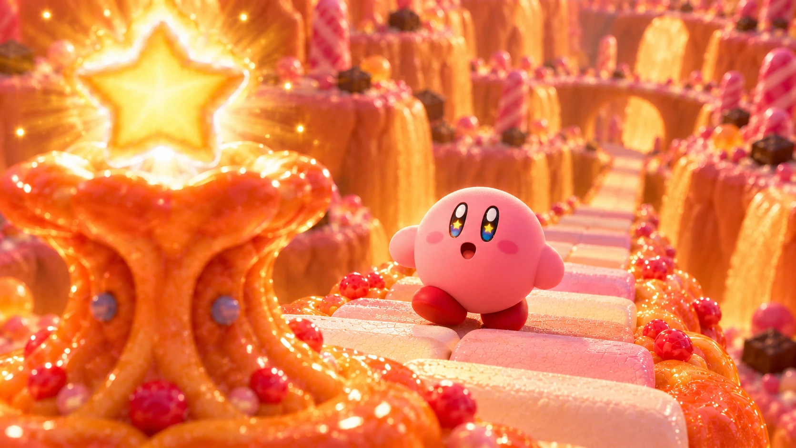

02 / MOTION · AI FAN FILM
KirbyBeyond the Tomato.
작은 호기심이 낯선 세계로 이어집니다.
커비의 모험을 AI 이미지와 영상,
음악으로 엮어낸 비상업적 팬 영상.
01 / WATCH THE FILM
토마토 너머,
새로운 세계를 향해.
익숙한 마을에서 시작해 동굴과 캔디 협곡을 지나 빛나는 별을 발견하는 여정. 캐릭터의 시선과 표정, 공간의 색과 빛을 통해 호기심이 모험으로 바뀌는 흐름을 담았습니다.
전체 완성본 · 약 2분 19초 · 웹 재생용 720p
감독: 곽동주 / AI 도구: ChatGPT · Codex · Kling / 음악: Suno
02 / VISUAL STORYTELLING
장면마다 다른 온도,
하나로 이어지는 모험.
토마토를 발견하는 숲의 따뜻한 빛, 작은 빛이 이끄는 동굴, 강렬한 색채의 캔디 협곡. 장면별 분위기를 바꾸면서 커비의 형태와 표정, 시선이 이야기의 중심에 남도록 이미지를 구성했습니다.



03 / MAKING THE FILM
한 장의 이미지에서,
시간을 가진 장면으로.
장면의 시작과 끝을 키프레임으로 정리하고, AI로 영상화한 컷을 연결했습니다. 캐릭터의 표정과 자세, 카메라 구도, 배경의 색감을 반복 조정하며 흐름을 다듬었습니다.
01 / KEYFRAMES
장면의 기준 만들기
마을, 동굴, 캔디 협곡 등 공간별 이미지를 만들고 시작·종료 프레임을 구성했습니다. 캐릭터와 카메라의 위치를 바꾸며 컷의 목적에 맞는 구도를 탐색했습니다.
02 / MOTION & CONTINUITY
움직임과 연결 다듬기
Kling으로 장면을 영상화하고, 걷기와 착지, 별을 향해 손을 뻗는 동작을 연결했습니다. 컷 사이의 시선과 감정 흐름을 기준으로 이미지를 수정했습니다.
03 / SOUND & FINISH
소리로 공간 완성하기
음악과 발소리, 장면 효과음을 맞추고 오프닝과 엔딩을 구성했습니다. 작품 제목과 감독명, 사용 도구와 팬 영상 표기를 포함해 완성본으로 정리했습니다.
04 / BEYOND THE SCREEN
모험의 인상을
한 장에 담다.
영상의 세계관을 제목 로고와 A1 세로 포스터로 확장했습니다. 따뜻한 빛과 캔디 질감, 커비의 표정을 중심으로 작은 모험의 분위기를 전달합니다.
포스터 PDF 원본 보기 새 탭에서 열림Kirby and related characters © Nintendo / HAL Laboratory, Inc.
This is a non-commercial fan film.
커비 캐릭터를 활용한 비상업적 팬 창작물입니다.